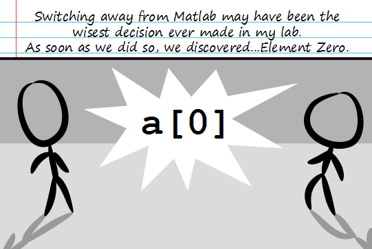

Comic JK 810
When I Feel Like It
⇤
<
?
>
⇥

⇤
<
?
>
⇥
Forum
.
RSS
.
Digg
.
Facebook
.
Reddit
.
Twitter
.
Stumbleupon
Your mother uses Gnu Octave to write games about banging dorky college boys. I used to use matlab for some of my applications. I switched to numpy, and I regret nothing! > PYYYYYYYYY----leluja! PYYYYYYYYYY----leluja! Good Lord, I love Python. holy god thank you thank you thank you. this is clarity in a senseless awful apocalyptic wasteland that is matlab. to think that some people actually "dont think its that bad". it is horrible >>Look at SageMath, It will open your mind. (and its language is python so nothing new to learn) >Matlab is very useful to the extent that it is an advanced calculator. For actual programming however you should use an actual programming language like Fortran... it is really not that bad, it actually makes sense not to have an element zero >Except that you are wasting the first container of your memory space >>Depends on how it stores arrays. It could quite possibly have dynamic arrays and store length in element zero, or have it so element 1 is in fact the first container in the memory space. >>>In fact, you can make it so that C arrays start at 1 in C without wasting memory. Of course it gets slightly complicated for doing that with multidimensional arrays. I have never used Matlab, do arrays start at a[1] and not a[0] in matlab? >Worse, they start at a(1). I don't get why this is so much of a problem... If you're dealing with coordinates or a value in a matrix in linear algebra class, the first rows and columns start with one, not zero. Matlab spins out of numerical analysis math classes and linear algebra.. it's a MATH tool, not a computer programming tool... it serves a different purpose. >Starting arrays at 0 wasn't even prevalent in programming languages until about twenty years ago when memory manipulation and pointers and so forth became big. >>In other words, quit your bitching. >>>Yeah, having element zero in arrays came from lazy programming languages lacking array support and trying to trick people into thinking that they had array support by exploiting pointers (I'm looking at you C) >>>>>Except that pointers happen to be the fastest way of handling arrays. Also, if Matlab is a "MATH tool" why do people program computational simulations in it? >>>>>>Because they don't know better, those simulations are slow as cold molasses. >>Sorry, but by "twenty" you mean "forty", right? >>>I think sometimes we forget it's not still the 90s. Functionally, the problem with MatLab is that it is inefficient and slow and doesn't have a syntax that transfers to programming languages people know. The Python Math toolset (PyMath or MathPy or some such) uses Python syntax and runs computations efficiently. Plus, there's intelligible documentation for it. As I recall from my linear algebra class back in first year, even the students working on masters of mathematics degrees couldn't figure things out (they'd have the entire lab done by hand in a quarter of the class, but were clueless about syntax...I'm just glad those labs weren't graded.) Best thing about MatLab: Wolfram Alpha. >Uh� Wolfram Alpha is by the company that makes Mathematica, not MatLab. >>You telling me you can't write a script in MatLab to go to Wolfram Alpha and plug stuff in and copy the results back? BAH! >>>because that's OBVIOUSLY IMPOSSIBLE in numpy. >>>>No, Wolfram Alpha is the best thing about any programing language. >>>>>nuff said Still on FORTRAN77 here in the nuclear physics / thermodynamics world. It wasn't until FORTRAN90 that we got a(0), or a(-n) if you're into that. >Gotta love F77 though! wait...you guys are still using binary based technology!? >...wtf are you talking about? >>second that [^_^] > I process everything using neural R-C networks.